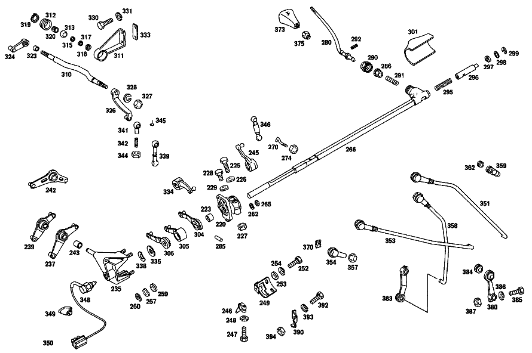

| № | Артикул | Название | Кол. | Примечание | Ограничение |
|---|---|---|---|---|---|
| 220 | A 115 260 32 80 | КРОНШТЕЙН | 1 | Рулевое управление: Влево | |
| 223 | A 001 981 84 10 | Игольчатый подшипник | 1 | ||
| 225 | N 304017 008028 | Винт с 6-гранной головкой | 1 | ||
| 226 | N 000137 008212 | Пружинная шайба | 1 | ||
| 227 | N 000934 008013 | Гайка | 1 | ||
| 228 | N 000561 006105 | Винт | 1 | ||
| 229 | N 000137 006204 | Пружинная шайба | 1 | ||
| 235 | A 115 260 29 80 | Опорный кронштейн | 1 | Рулевое управление: ВлевоКоробка передач | |
| 237 | A 115 260 47 37 | Рычаг | 1 | Рулевое управление: ВлевоКоробка передач | |
| 239 | A 115 260 48 37 | РЫЧАГ | 1 | Рулевое управление: ВлевоКоробка передач | |
| 242 | A 115 260 62 37 | РЫЧАГ | 1 | Рулевое управление: ВлевоАвтоматическая коробка переключения передач [402] БОЛЬШЕ НЕ ПОСТАВЛЯЕТСЯ | |
| 243 | A 002 981 02 10 | Игольчатый подшипник | 2 | Рулевое управление: ВлевоКоробка передач | |
| 243 | A 002 981 02 10 | Игольчатый подшипник | 1 | Рулевое управление: ВлевоАвтоматическая коробка переключения передач | |
| 245 | A 115 260 82 37 | Рычаг | 1 | Рулевое управление: ВлевоАвтоматическая коробка переключения передач | |
| 246 | A 112 268 00 39 | НАПРАВЛЯЮЩ. ЦАПФА | 1 | Автоматическая коробка переключения передач | |
| 247 | N 000933 006130 | Винт | 1 | Автоматическая коробка переключения передач | |
| 248 | A 094 990 68 10 | Пружинное кольцо | 1 | Автоматическая коробка переключения передач | |
| 249 | A 115 268 03 47 | Кулиса | 1 | Рулевое управление: ВлевоАвтоматическая коробка переключения передач | |
| 252 | N 000933 006102 | Винт | 2 | Автоматическая коробка переключения передач | |
| 253 | A 094 990 68 10 | Пружинное кольцо | 2 | Автоматическая коробка переключения передач | |
| 254 | N 000125 006421 | Шайба | 2 | Автоматическая коробка переключения передач | |
| 257 | N 900055 012001 | Пружинная шайба | 1 | Рулевое управление: Влево | |
| 259 | A 312 990 03 40 | Диск | 1 | Рулевое управление: Влево | |
| 260 | N 006799 010001 | Стопорная шайба | 1 | Рулевое управление: Влево | |
| 262 | N 000137 008212 | Пружинная шайба | 3 | ||
| 265 | N 000934 008013 | Гайка | 3 | ||
| 266 | A 115 260 53 82 | Тяга переключения передач | 1 | Рулевое управление: ВлевоКоробка передач | |
| 280 | A 115 260 44 39 | РЫЧАГ ПЕРЕКЛЮЧЕНИЯ | 1 | Рулевое управление: Влево | |
| 285 | A 115 991 03 01 | Палец | 1 | ||
| 286 | A 115 268 05 50 | втулка | 1 | Рулевое управление: ВлевоКоробка передач | |
| 290 | A 115 267 01 14 | Колпачок | 1 | ||
| 291 | A 115 993 99 02 | Нажимная пружина | 1 | ||
| 292 | N 001481 005017 | Распорный штифт | 1 | ||
| 295 | A 120 993 21 01 | пружина | 1 | ||
| 296 | A 115 268 04 39 | НАПРАВЛЯЮЩ. ЦАПФА | 1 | ||
| 297 | A 115 997 14 40 | Уплотнительное кольцо | 2 | [080] FROM CHASSIS: 023 100680 072 102864 073 104846 | |
| 298 | A 186 990 69 40 | Диск | NB | ||
| 299 | A 186 268 02 73 | предохранитель | 1 | ||
| 301 | A 116 268 04 97 | Манжета | 1 | Рулевое управление: Влево | |
| 304 | A 115 260 78 37 | Рычаг | 1 | Рулевое управление: ВлевоКоробка передач | |
| 305 | A 115 260 80 37 | Поворотный рычаг | 1 | Рулевое управление: ВлевоКоробка передач | |
| 306 | A 115 260 94 37 | РЫЧАГ | 1 | Рулевое управление: ВлевоКоробка передач | |
| 310 | A 115 268 00 32 | ВАЛ | 1 | Рулевое управление: ВправоАвтоматическая коробка переключения передач | |
| 311 | A 115 268 04 01 | КОРПУС | 2 | Рулевое управление: ВправоАвтоматическая коробка переключения передач [402] БОЛЬШЕ НЕ ПОСТАВЛЯЕТСЯ | |
| 312 | A 111 268 00 86 | Резиновое кольцо | 2 | Рулевое управление: ВправоАвтоматическая коробка переключения передач | |
| 313 | A 111 991 00 29 | Шар | 2 | Рулевое управление: ВправоАвтоматическая коробка переключения передач | |
| 315 | A 180 268 00 76 | ШАЙБА | 4 | Рулевое управление: ВправоАвтоматическая коробка переключения передач | |
| 317 | A 111 997 10 40 | УПЛОТНИТ. КОЛЬЦО | 4 | Рулевое управление: ВправоАвтоматическая коробка переключения передач | |
| 318 | N 000988 010000 | Регулировочная шайба | 4 | Рулевое управление: ВправоАвтоматическая коробка переключения передач | |
| 319 | N 000471 010000 | Стопорное кольцо | 2 | Рулевое управление: ВправоАвтоматическая коробка переключения передач | |
| 320 | A 000 981 18 10 | Игольчатый подшипник | 2 | Рулевое управление: ВправоАвтоматическая коробка переключения передач | |
| 323 | A 112 991 03 40 | РАСПОРН. ТРУБКА | 1 | Рулевое управление: ВправоАвтоматическая коробка переключения передач | |
| 324 | A 115 260 00 81 | РЫЧАГ | 1 | Рулевое управление: ВправоАвтоматическая коробка переключения передач [402] БОЛЬШЕ НЕ ПОСТАВЛЯЕТСЯ | |
| 326 | A 114 260 00 81 | РЫЧАГ | 1 | Рулевое управление: ВправоАвтоматическая коробка переключения передач [402] БОЛЬШЕ НЕ ПОСТАВЛЯЕТСЯ | |
| 327 | N 000934 007005 | Гайка | 2 | Рулевое управление: ВправоАвтоматическая коробка переключения передач | |
| 328 | N 912004 007100 | Пружинное кольцо | 2 | Рулевое управление: ВправоАвтоматическая коробка переключения передач | |
| 330 | N 000933 006130 | Винт | 4 | Рулевое управление: ВправоАвтоматическая коробка переключения передач | |
| 331 | N 000137 006204 | Пружинная шайба | 4 | Рулевое управление: ВправоАвтоматическая коробка переключения передач | |
| 333 | A 115 462 27 39 | ДЕРЖАТЕЛЬ | 2 | Рулевое управление: ВправоАвтоматическая коробка переключения передач | |
| 334 | A 115 260 68 37 | РЫЧАГ | 1 | Рулевое управление: ВправоАвтоматическая коробка переключения передач [402] БОЛЬШЕ НЕ ПОСТАВЛЯЕТСЯ | |
| 335 | A 115 268 02 76 | Диск | 2 | Автоматическая коробка переключения передач | |
| 338 | A 115 990 02 48 | Пружинная шайба | 1 | ||
| 339 | A 115 260 03 89 | ПРИВОДНАЯ ШТАНГА | - | Рулевое управление: ВлевоКоробка передач | |
| 339 | A 111 260 00 66 | Шаровой подпятник | 2 | Рулевое управление: ВлевоКоробка передач | |
| 341 | N 071805 010204 | Шаровой подпятник | 4 | Рулевое управление: ВлевоКоробка передач | |
| 342 | N 000939 006011 | - Винт | 2 | Рулевое управление: ВлевоКоробка передач | |
| 344 | A 094 990 09 00 | Шестигранная гайка | 2 | Рулевое управление: ВлевоКоробка передач | |
| 345 | N 071805 010400 | Защитный кронштейн | 4 | Рулевое управление: ВлевоКоробка передач | |
| 345 | N 071805 010400 | Защитный кронштейн | 2 | Автоматическая коробка переключения передач | |
| 346 | A 000 268 10 66 | ПОДПЯТНИК ШАРОВОЙ | - | Автоматическая коробка переключения передач | |
| 346 | A 000 268 12 66 | Шаровой подпятник | 1 | Автоматическая коробка переключения передач | |
| 349 | A 115 997 11 81 | - КАБ. ВТУЛКА | - | Коробка передач | |
| 349 | A 126 997 25 81 | - втулка | 1 | Коробка передач | |
| 350 | A 003 545 71 28 | - ШТЕКЕР | - | Коробка передач | |
| 350 | A 006 545 78 28 | - Корпус штекера | 1 | 4\-СЕКЦ.; 6\-PIN Коробка передач | |
| 351 | A 114 260 00 33 | ТЯГА ПЕРЕКЛ. ПЕРЕДАЧ | 1 | Рулевое управление: ВлевоКоробка передач [402] БОЛЬШЕ НЕ ПОСТАВЛЯЕТСЯ | |
| 353 | A 114 260 01 33 | ТЯГА ПЕРЕКЛ. ПЕРЕДАЧ | 1 | Рулевое управление: ВлевоКоробка передач | |
| 354 | A 000 991 38 22 | Шаровой подпятник | 2 | Рулевое управление: ВлевоКоробка передач | |
| 357 | N 070616 010004 | Гайка | 2 | Рулевое управление: ВлевоКоробка передач | |
| 358 | A 114 260 02 33 | ТЯГА ПЕРЕКЛ. ПЕРЕДАЧ | 1 | Рулевое управление: ВлевоКоробка передач [402] БОЛЬШЕ НЕ ПОСТАВЛЯЕТСЯ | |
| 370 | A 000 994 29 60 | предохранитель | 3 | Рулевое управление: ВлевоКоробка передач | |
| 370 | A 000 994 29 60 | предохранитель | 1 | Автоматическая коробка переключения передач | |
| 373 | A 115 268 12 42 | Кнопка ручки рычага КП | 1 | Рулевое управление: ВлевоКоробка передач | |
| 375 | A 115 268 01 72 | ГАЙКА | 1 | Рулевое управление: ВлевоКоробка передач | |
| 380 | A 115 260 75 37 | РЫЧАГ | - | ||
| 380 | A 115 268 25 30 | Рычаг | 0 | ||
| 380 | A 115 268 25 30 | - Рычаг | 1 | ПЕРВАЯ И ВТОРАЯ ПЕРЕДАЧА Рулевое управление: ВлевоКоробка передач | |
| 380 | A 115 268 25 30 | Рычаг | 1 | Рулевое управление: ВлевоКоробка передач | |
| 383 | A 115 260 77 37 | РЫЧАГ | 1 | Рулевое управление: ВлевоКоробка передач | |
| 384 | A 000 992 05 10 | ВТУЛКА | 3 | Рулевое управление: ВлевоКоробка передач | |
| 385 | N 000933 006127 | Винт | 3 | M6X25 Рулевое управление: ВлевоКоробка передач | |
| 386 | A 094 990 68 10 | Пружинное кольцо | 3 | Рулевое управление: ВлевоКоробка передач | |
| 387 | N 304032 006008 | Шестигранная гайка | 3 | Рулевое управление: ВлевоКоробка передач | |
| 390 | A 115 260 05 62 | ДЕРЖАТЕЛЬ | 1 | Рулевое управление: ВлевоАвтоматическая коробка переключения передач [402] БОЛЬШЕ НЕ ПОСТАВЛЯЕТСЯ | |
| 392 | N 000931 006094 | Винт | 1 | Автоматическая коробка переключения передач | |
| 393 | A 094 990 68 10 | Пружинное кольцо | 1 | Автоматическая коробка переключения передач | |
| 394 | N 000934 006013 | Гайка | - | Автоматическая коробка переключения передач | |
| 394 | N 304032 006008 | Шестигранная гайка | 1 | Автоматическая коробка переключения передач | |
| 400 | A 115 267 14 05 | ПОДШИПНИК | - | Рулевое управление: ВправоКоробка передач | |
| 400 | A 115 267 36 05 | Опорный кронштейн | 1 | Рулевое управление: ВправоКоробка передач | |
| 402 | A 115 260 72 82 | Тяга переключения передач | 1 | Рулевое управление: ВправоКоробка передач | |
| 403 | A 115 991 03 01 | Палец | 1 | Рулевое управление: ВправоКоробка передач | |
| 404 | A 123 260 22 39 | Рычаг перекл.передач | 1 | ОБЪЁМ ПОСТАВКИ Рулевое управление: ВправоКоробка передач | |
| 405 | A 115 267 07 50 | втулка | 1 | Рулевое управление: ВправоКоробка передач | |
| 406 | A 115 990 26 40 | ШАЙБА | 1 | Рулевое управление: ВправоКоробка передач | |
| 407 | N 900055 018001 | Пружинная шайба | 1 | Рулевое управление: ВправоКоробка передач | |
| 409 | A 123 267 02 52 | Диск | 1 | Рулевое управление: ВправоКоробка передач | |
| 411 | A 115 267 22 50 | втулка | 1 | Рулевое управление: ВправоКоробка передач | |
| 412 | A 115 993 93 03 | Нажимная пружина | 1 | Рулевое управление: ВправоКоробка передач | |
| 415 | A 115 267 01 14 | Колпачок | 1 | Рулевое управление: ВправоКоробка передач | |
| 416 | A 115 268 05 50 | втулка | 1 | Рулевое управление: ВправоКоробка передач | |
| 417 | A 115 993 99 02 | Нажимная пружина | 1 | Рулевое управление: ВправоКоробка передач | |
| 419 | N 007346 005000 | Зажимная гильза | - | Рулевое управление: ВправоКоробка передач | |
| 419 | N 001481 005017 | Распорный штифт | 1 | Рулевое управление: ВправоКоробка передач | |
| 420 | A 111 997 12 40 | Уплотнительное кольцо | 1 | Рулевое управление: ВправоКоробка передач | |
| 421 | A 186 990 69 40 | Диск | NB | Рулевое управление: ВправоКоробка передач | |
| 423 | A 186 268 02 73 | предохранитель | 1 | Рулевое управление: ВправоКоробка передач | |
| 424 | A 115 260 41 39 | Рычаг | 1 | ПЕРЕДАЧА ЗАДНЕГО ХОДА Рулевое управление: ВправоКоробка передач [083] FROM CHASSIS: 072 103765 073 107094 | |
| 425 | A 115 260 43 39 | Рычаг | 1 | ПЕРВАЯ И ВТОРАЯ ПЕРЕДАЧА Рулевое управление: ВправоКоробка передач [083] FROM CHASSIS: 072 103765 073 107094 | |
| 426 | A 115 260 42 39 | Рычаг | 1 | ТРЕТЬЯ И ЧЕТВЁРТАЯ ПЕРЕДАЧА Рулевое управление: ВправоКоробка передач [083] FROM CHASSIS: 072 103765 073 107094 | |
| 428 | A 115 267 06 76 | Диск | 1 | Рулевое управление: ВправоКоробка передач | |
| 429 | A 115 260 03 76 | Направляющий палец | 1 | Рулевое управление: ВправоКоробка передач | |
| 431 | N 000137 006204 | Пружинная шайба | 2 | Рулевое управление: ВправоКоробка передач | |
| 432 | N 000933 006130 | Винт | 2 | Рулевое управление: ВправоКоробка передач | |
| 434 | A 126 267 04 10 | Ручка рычага перекл.пер. | 1 | Рулевое управление: ВправоКоробка передач | |
| 435 | A 123 267 00 97 | Манжета | 1 | Рулевое управление: ВправоКоробка передач | |
| 436 | N 070616 010003 | Гайка | 1 | Рулевое управление: ВправоКоробка передач | |
| 440 | A 115 462 03 23 | КРЫШКА | 1 | Рулевое управление: ВправоКоробка передач [402] БОЛЬШЕ НЕ ПОСТАВЛЯЕТСЯ | |
| 441 | A 115 267 03 80 | Уплотнительная прокладка | 1 | Рулевое управление: ВправоКоробка передач | |
| 443 | N 000125 006421 | Шайба | 4 | Рулевое управление: ВправоКоробка передач | |
| 445 | N 000931 006137 | Винт | 3 | Рулевое управление: ВправоКоробка передач | |
| 446 | A 000 990 27 91 | ГАЙКОДЕРЖАТЕЛЬ | - | Рулевое управление: ВправоКоробка передач | |
| 446 | A 000 990 22 91 | ГАЙКОДЕРЖАТЕЛЬ | - | Рулевое управление: ВправоКоробка передач | |
| 446 | A 001 990 67 91 | Гайкодержатель | 1 | Рулевое управление: ВправоКоробка передач [415] ПРИМЕЧ. ПО ЗАМЕНЕ ПРИМЕНИМО ТОЛЬКО ДЛЯ СТОЯЩИХ РЯДОМ ПОЗИЦИЙ | |
| 447 | A 000 545 24 06 | Переключатель | 1 | Рулевое управление: ВправоКоробка передач | |
| 448 | A 003 545 71 28 | - ШТЕКЕР | - | Рулевое управление: ВправоКоробка передач | |
| 448 | A 006 545 78 28 | - Корпус штекера | 1 | 4\-СЕКЦ.; 6\-PIN Рулевое управление: ВправоКоробка передач | |
| 449 | A 114 260 08 33 | ТЯГА ПЕРЕКЛ. ПЕРЕДАЧ | 1 | ПЕРВАЯ И ВТОРАЯ ПЕРЕДАЧА Рулевое управление: ВправоКоробка передач | |
| 451 | A 115 260 03 53 | - Концевой элемент | 2 | Рулевое управление: ВправоКоробка передач [402] БОЛЬШЕ НЕ ПОСТАВЛЯЕТСЯ | |
| 453 | A 115 992 01 10 | - ВТУЛКА | - | Рулевое управление: ВправоКоробка передач | |
| 453 | A 210 992 00 10 | - втулка | 2 | Рулевое управление: ВправоКоробка передач | |
| 458 | A 000 994 29 60 | предохранитель | 1 | Рулевое управление: ВправоКоробка передач | |
| 459 | A 115 260 75 37 | РЫЧАГ | - | Рулевое управление: ВправоКоробка передач | |
| 459 | A 115 268 25 30 | Рычаг | 2 | Рулевое управление: ВправоКоробка передач | |
| 461 | A 115 260 77 37 | РЫЧАГ | 1 | Рулевое управление: ВправоКоробка передач | |
| A 115 260 41 80 | КРОНШТЕЙН | 1 | Рулевое управление: ВправоАвтоматическая коробка переключения передач | ||
| A 115 260 35 80 | КРОНШТЕЙН | 1 | Рулевое управление: ВлевоАвтоматическая коробка переключения передач | ||
| A 115 260 27 80 | КРОНШТЕЙН | 1 | Рулевое управление: ВправоАвтоматическая коробка переключения передач | ||
| A 115 268 02 47 | КУЛИСА | 1 | Рулевое управление: ВправоАвтоматическая коробка переключения передач | ||
| A 115 260 66 82 | ТЯГА ПЕРЕКЛЮЧЕНИЯ | 1 | Рулевое управление: ВлевоАвтоматическая коробка переключения передач | ||
| A 115 260 68 82 | ТЯГА ПЕРЕКЛЮЧЕНИЯ | 1 | Рулевое управление: ВправоАвтоматическая коробка переключения передач | ||
| A 109 990 02 38 | БОЛТ | 1 | Рулевое управление: ВлевоАвтоматическая коробка переключения передач | ||
| A 115 990 04 38 | БОЛТ | 1 | Рулевое управление: ВправоАвтоматическая коробка переключения передач | ||
| N 000934 005008 | Гайка | 1 | M5 Автоматическая коробка переключения передач | ||
| A 115 260 45 39 | РЫЧАГ ПЕРЕКЛЮЧЕНИЯ | 1 | Рулевое управление: Вправо | ||
| A 115 268 07 50 | втулка | 1 | Автоматическая коробка переключения передач | ||
| A 111 997 12 40 | Уплотнительное кольцо | 2 | [079] UP TO CHASSIS: 023 100679 072 102863 073 104845 | ||
| A 116 268 04 97 | Манжета | 1 | Рулевое управление: ВправоАвтоматическая коробка переключения передач | ||
| A 000 545 35 06 | Переключатель | 1 | Рулевое управление: ВлевоКоробка передач | ||
| A 000 545 35 06 | Переключатель | 1 | Рулевое управление: ВправоКоробка передач [072] UP TO CHASSIS: 023,072,073 100000 | ||
| A 000 545 44 06 | ВЫКЛЮЧАТЕЛЬ | 1 | Рулевое управление: ВправоКоробка передач [402] БОЛЬШЕ НЕ ПОСТАВЛЯЕТСЯ [073] FROM CHASSIS: 023,072,073 100001 | ||
| A 094 990 92 07 | Уплотнительное кольцо | 1 | Коробка передач | ||
| A 000 991 38 22 | - Шаровой подпятник | 1 | Рулевое управление: ВлевоКоробка передач | ||
| A 114 260 12 33 | ТЯГА ПЕРЕКЛ. ПЕРЕДАЧ | 1 | Рулевое управление: ВлевоАвтоматическая коробка переключения передач [072] UP TO CHASSIS: 023,072,073 100000 | ||
| A 114 260 24 33 | ТЯГА ПЕРЕКЛ. ПЕРЕДАЧ | 1 | Рулевое управление: ВлевоАвтоматическая коробка переключения передач [402] БОЛЬШЕ НЕ ПОСТАВЛЯЕТСЯ [073] FROM CHASSIS: 023,072,073 100001 | ||
| A 114 260 18 33 | ТЯГА ПЕРЕКЛ. ПЕРЕДАЧ | 1 | Рулевое управление: ВправоАвтоматическая коробка переключения передач [072] UP TO CHASSIS: 023,072,073 100000 | ||
| A 114 260 25 33 | ТЯГА ПЕРЕКЛ. ПЕРЕДАЧ | 1 | Рулевое управление: ВправоАвтоматическая коробка переключения передач [073] FROM CHASSIS: 023,072,073 100001 | ||
| A 000 991 38 22 | - Шаровой подпятник | 1 | Автоматическая коробка переключения передач | ||
| N 070616 010004 | - Гайка | 1 | Автоматическая коробка переключения передач | ||
| A 115 992 03 10 | Втулка подшипника | 1 | Автоматическая коробка переключения передач | ||
| A 115 268 14 42 | КНОПКА | 1 | Автоматическая коробка переключения передач | ||
| A 115 268 00 72 | гайка | 1 | Автоматическая коробка переключения передач | ||
| A 115 260 06 62 | ДЕРЖАТЕЛЬ | 1 | Рулевое управление: ВправоАвтоматическая коробка переключения передач | ||
| A 115 260 19 39 | РЫЧАГ ПЕРЕКЛЮЧЕНИЯ | - | Рулевое управление: ВправоКоробка передач [077] UP TO CHASSIS: 072 101946 073 102202 | ||
| A 115 260 38 39 | РЫЧАГ ПЕРЕКЛЮЧЕНИЯ | - | Рулевое управление: ВправоКоробка передач [078] FROM CHASSIS: 072 101947 073 102203 [082] UP TO CHASSIS: 072 103764 073 107093 | ||
| A 115 260 17 39 | РЫЧАГ ПЕРЕКЛЮЧЕНИЯ | - | Рулевое управление: ВправоКоробка передач [077] UP TO CHASSIS: 072 101946 073 102202 | ||
| A 115 260 36 39 | РЫЧАГ ПЕРЕКЛЮЧЕНИЯ | - | Рулевое управление: ВправоКоробка передач [078] FROM CHASSIS: 072 101947 073 102203 [082] UP TO CHASSIS: 072 103764 073 107093 | ||
| A 115 260 18 39 | РЫЧАГ ПЕРЕКЛЮЧЕНИЯ | - | Рулевое управление: ВправоКоробка передач [077] UP TO CHASSIS: 072 101946 073 102202 | ||
| A 115 260 37 39 | РЫЧАГ ПЕРЕКЛЮЧЕНИЯ | - | Рулевое управление: ВправоКоробка передач [078] FROM CHASSIS: 072 101947 073 102203 [082] UP TO CHASSIS: 072 103764 073 107093 | ||
| N 000931 006114 | Винт | - | Рулевое управление: ВправоКоробка передач | ||
| N 304017 006012 | Винт с 6-гранной головкой | 1 | M6X30\-8.8 Рулевое управление: ВправоКоробка передач | ||
| A 114 260 09 33 | ТЯГА ПЕРЕКЛ. ПЕРЕДАЧ | 1 | ТРЕТЬЯ И ЧЕТВЁРТАЯ ПЕРЕДАЧА Рулевое управление: ВправоКоробка передач | ||
| A 114 260 10 33 | ТЯГА ПЕРЕКЛ. ПЕРЕДАЧ | 1 | ПЕРЕДАЧА ЗАДНЕГО ХОДА Рулевое управление: ВправоКоробка передач [402] БОЛЬШЕ НЕ ПОСТАВЛЯЕТСЯ | ||
| A 115 260 03 53 | - Концевой элемент | 1 | Рулевое управление: ВправоКоробка передач [402] БОЛЬШЕ НЕ ПОСТАВЛЯЕТСЯ | ||
| A 115 992 01 10 | - ВТУЛКА | - | Рулевое управление: ВправоКоробка передач | ||
| A 210 992 00 10 | - втулка | 1 | Рулевое управление: ВправоКоробка передач |
Позиций: 186 · подписано на схемах: 145 · колесо — плавный зум в курсор, перетаскивание — пан, двойной клик — зум, клик по артикулу — скопировать.